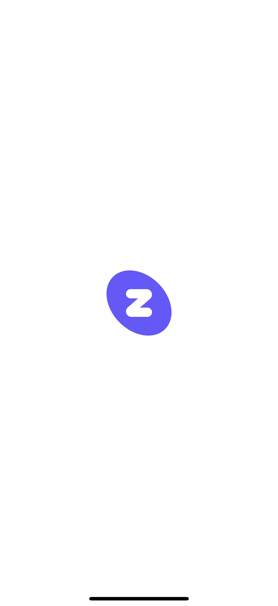
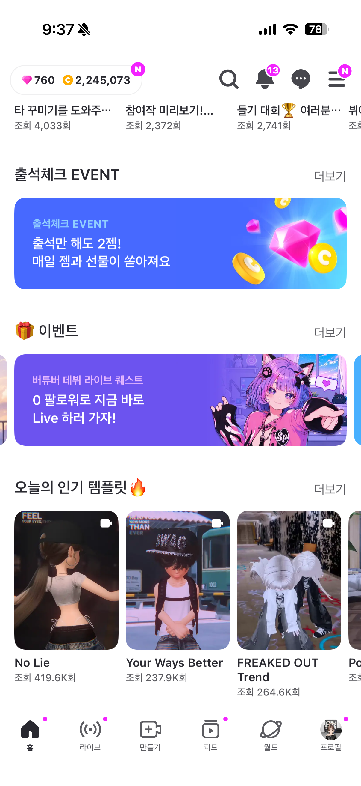
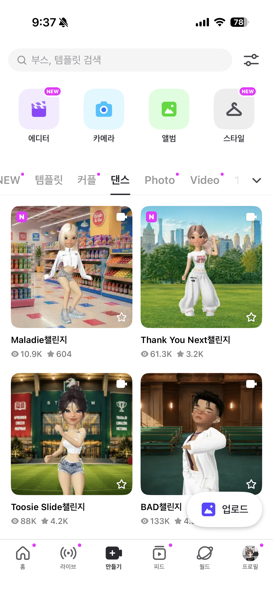
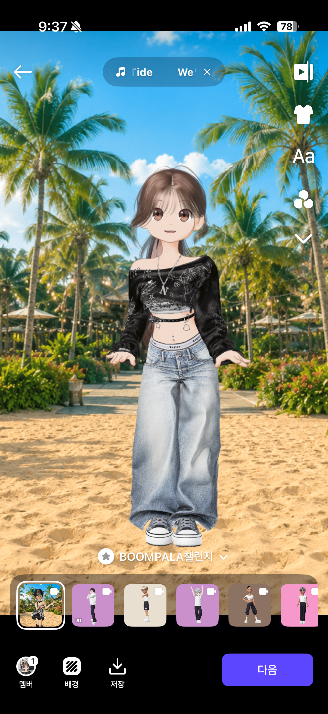

6. 생성형AI를 활용한 영상 제작
스마트폰 캐릭터 일관성 영상화 기술 및 모바일 특화 AI 비디오 툴인 higgsfield 활용 기초 단계입니다.
higgsfield.ai 툴의 특장점 및 무료 이용 팁
- 모바일 세로형(Shorts) 특화: 모바일 애플리케이션으로 접근성이 높으며 숏폼 전용 9:16 비율 비디오 생성에 매우 우수합니다.
- 24시간마다 20크레딧 무료 지급: 가입 후 매일 충전되는 기본 무료 크레딧을 이용해 실무형 프로토타입 광고 영상을 부담 없이 여러 번 생성해볼 수 있습니다.
- 캐릭터 참조 모드(Character Reference): 정면 사진 한 장만 넣어도 그 인물이 달리기, 점프 등 지정된 복잡한 액션을 취하는 움직임 시퀀스를 고스란히 구현해줍니다.
ZEPETO의 동작 템플릿 활용
제페토(ZEPETO) 어플리케이션 내의 캐릭터 제스처나 댄스 동작 템플릿을 비디오 촬영 및 추출하여, AI 캐릭터 참조 비디오(Character Reference) 제작을 위한 원본 모션 소스로 유용하게 활용할 수 있습니다. 이미지를 클릭하여 크게 확인해 보세요.

zepeto00.png (클릭하여 크게 보기)

zepeto01.png (클릭하여 크게 보기)

zepeto02.png (클릭하여 크게 보기)

zepeto03.png (클릭하여 크게 보기)
6. 생성형AI를 활용한 영상 제작
프롬프트 고도화 여부와 AI 비디오 모델 성능(Kling, Seedance 등) 차이에 따른 일부공개 수강 결과물 비교 피드입니다.
영상 목록
Shorts
Kling 2.0 활용
Shorts
Seedance 2.0 mini 활용
Shorts
Seedance 2.0 활용
Shorts
Kling 3.0 Motion Control
일반영상
Google Omni Flash 활용
Shorts
Seedance 2.0 활용
Shorts
Gemini에서 영상 제작
Kling 2.0 활용
프롬프트 엔지니어링 개선 전, AI 동영상 생성 초기에 나타나는 왜곡 현상과 전형적인 물리법칙 위배 움직임을 비교 분석하는 예제입니다.